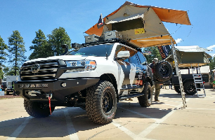
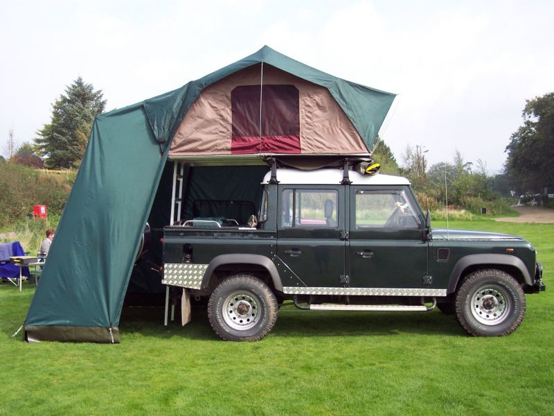
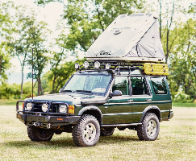
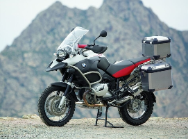
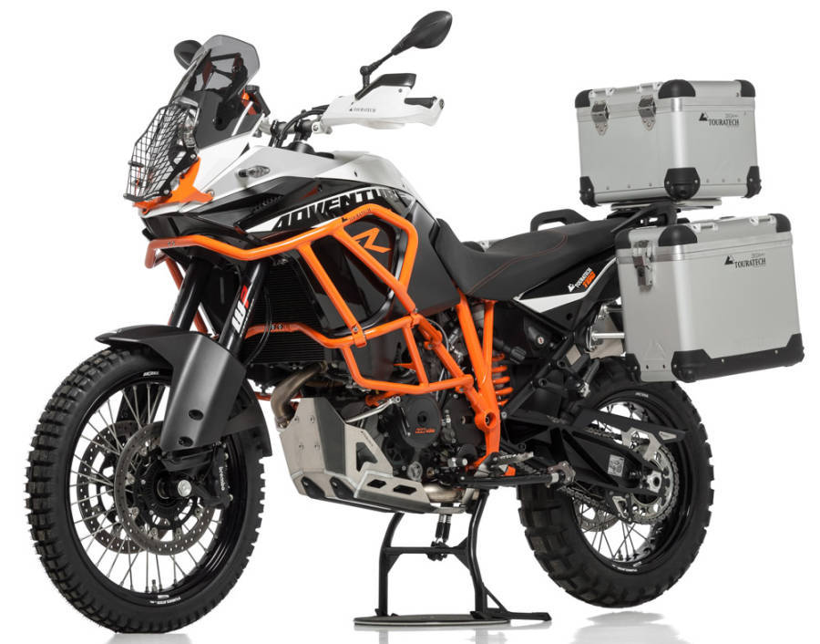
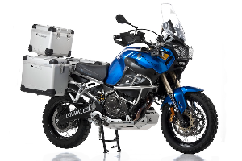

Book Your Vehicle
Our fleet consists of 21 customised 4x4 Jeeps and 21 modified Motorcycles. Have a look below at what models are available and which may be most suitable for you. All of our vehicles have had modifications made which will enhance your travels as well as add comfort and support.
Toyota Landcruiser

The Toyota Landcruiser is a popular choice among overland adventurers, It's reputation matches it's ability on and off the road. Our Landcruisers come with the standard roof mounted tents, Raised suspension and offroad tyres.
Landrover Defender

The classic, Our fleet of defenders have been modified to overcome any terrain thrown at them. They too have been fitted with roof mounted tent, suspension kits and all other Overland essentials.
Landrover Discovery

The Disco's, an overlander's favourite. Kitted out to the brim and ready to cross country, our fleet of Discovery jeeps are in perfect condition and cater to all the needs of the overlander from beginner to seasoned vet.
BMW GS1200

Our GS1200's have all the newest bits and pieces, we also include the travel boxes for storage. Sat-Nav, heated seat and grips, extended wind visor and enduro tyres, The bikes are ready to jump on and let rip.
KTM Adventure R 1190

The hooligans favourite. Equipped with all overland necessities, the Adventure R handles like a motocross bike across all terrain. Again, all of our bikes have been modified specifically to endure Overland tours of all lengths and difficulties.
Yamaha Super Tenere

The super Tenere is a classic among motorcycle tourers that enjoy their rides. It is well capapble of handling any terrain you throw at it and it has everything you need to keep you going.